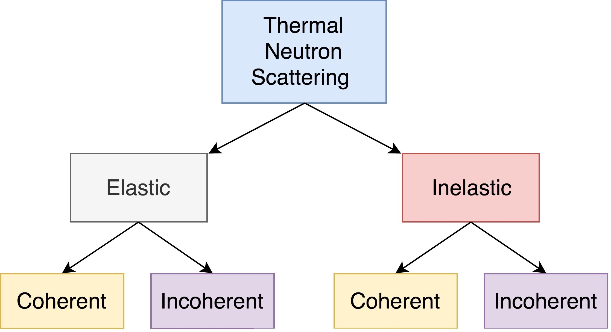

Theory¶
Thermal Neutrons¶
This project aims to describe the ways in which low energy neutrons (with energy on the order of 1 eV or less) interact with material. Accurately describing these interactions is crucial for adequate modeling of thermal nuclear systems. A neutron at room temperature has an energy of approximately 0.025 eV, meaning that its de Broglie wavelength is about 1 angstrom which is close to typical interatomic spacing in materials. This can complicate neutron-target interactions and the wave-like behavior of neutrons must be carefully accounted for.
Overview of Scattering¶
The probability of a neutron with initial energy and solid angle \((E,\Omega)\) scattering to have some final energy and solid angle \((E',\Omega')\) is described using the double differential scattering cross section \(\sigma(E\rightarrow E', \Omega\rightarrow\Omega')\). This cross section describes both elastic and inelastic scattering, both of which have a coherent and incoherent contribution.
In elastic scattering, total kinetic energy (i.e. sum of neutron and target kinetic energy) is conserved, which is not the case for inelastic scattering. Inelastic scattering thus requires for some excitation of the target to occur, which accounts for the difference between initial and final kinetic energy.
Elastic Scattering¶
Inelastic Scattering¶
For inelastic scattering kinetic energy is not conserved, meaning that some excitation (or de-excitation) occurred. For high energy neutrons, this excitation is a nuclear excitation, where the target nucleus is brought to some excited state. This requires a significant amount of energy, and thus nuclear inelastic scattering is a threshold reaction, as seen below.
{kind=link}
Elastic and nuclear inelastic scattering cross sections for U-238 (from NNDC). Note that nuclear inelastic scattering is a threshold reaction that does not appreciable contribute until incoming neutrons have an incoming energy of about 0.1 MeV.¶
For thermal (low energy) neutrons, this excitation is typically a molecular or lattice excitation, where vibrational modes of a multi-atom system are excited. Molecular excitations can be induced by neutrons with energy on the order of 1 eV and do not exhibit the same extreme threshold behavior as does nuclear excitations. Thermal inelastic scattering is thus focused on molecular excitations.
Pair Distribution Function¶
The scattering kernel \(\sigma_s(E\rightarrow E',\Omega\rightarrow\Omega')\) is typically separated into a coherent and an incoherent contribution (Note that in separating the coherent and incoherent contributions, one ignores spin-correlation effects. These effects are of little to no importance for most applications, except for instances like thermal scattering in liquid hydrogen, which has correlated spins (CITE PARKS). Such materials are considered apart from this simple coherent/incoherent discussion), both of which can be defined in terms of so-called “van Hove pair distribution function” \(G(\boldsymbol{r},t)\), which contains information regarding the scattering material. The pair distribution function is split into two terms \(G(\boldsymbol{r},t)=G_s(\boldsymbol{r},t)+G_d(\boldsymbol{r},t)\) which represent a “self” term and a “distinct” term, respectively. In a classical system, \(G(\boldsymbol{r},t)\) can be interpreted as the probability that an atom will be at location \(\boldsymbol{r}\) at time \(t\), given that an atom existed at the origin at time \(t=0\).
The first term, \(G_s(\boldsymbol{r},t)\), represents the probability the particle originally at the origin would later exist at position \(\boldsymbol{r}\). The latter term \(G_d(\boldsymbol{r},t)\) assumes that the two particles observed were not the same (CITE pairDist,bell-glasstone).
Using these definitions of the pair distribution functions, the coherent and incoherent scattering kernels for a homogeneous system consisting of bound scatterers of a single nuclide can be described as
where \(\hbar\boldsymbol{\kappa}\) is the change in neutron momentum, \(\epsilon\) is the change in energy, and \(\sigma_{coh}\) and \(\sigma_{inc}\) are the bound coherent and incoherent scattering cross sections, respectively (CITE bell-glasstone). These bound cross sections can be defined in terms of the first and second moments of the scattering length \(b\),
where \(\langle...\rangle\) denotes the average (CITE sturm1993dynamic). These definitions assume that the spins of adjacent nuclei are randomly oriented. For reactor purposes this is a very good approximation, since the spins of neighboring nuclei are typically uncorrelated except at very low temperatures.